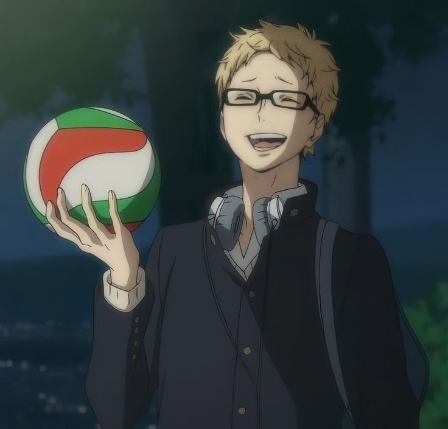
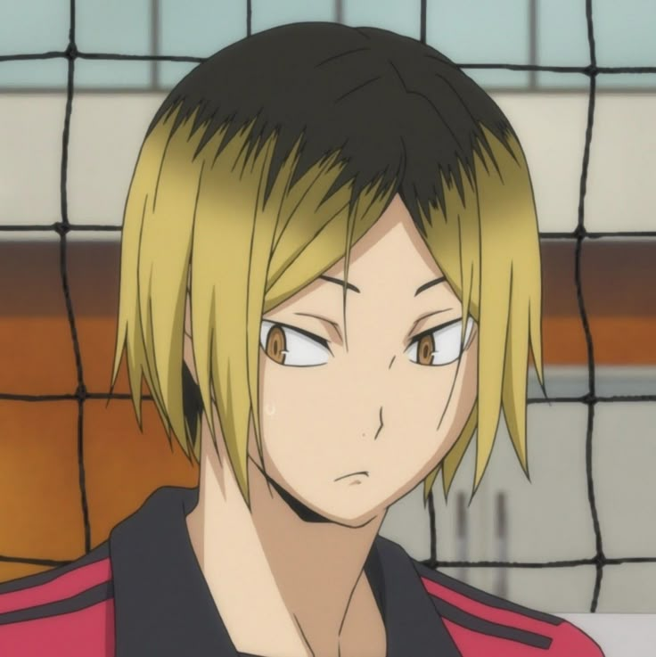

Tokoh dengan Character Development yang kuat
1. Shoyo Hinata

merupakan tokoh utama yang mengalami perkembangan karakter paling konsisten sepanjang cerita.
Di awal, Hinata digambarkan sebagai pemain bertubuh pendek dengan kemampuan dasar yang masih minim,
namun memiliki semangat dan keinginan belajar yang sangat besar. Seiring berjalannya waktu, ia tidak hanya berkembang secara teknik,
tetapi juga secara mental. Hinata belajar membaca permainan, bekerja sama dengan tim, dan memahami bahwa menjadi pemain hebat bukan hanya soal mencetak poin,
melainkan berkontribusi untuk keseluruhan tim. Perjuangannya membuat banyak penonton merasa terinspirasi dan terhubung secara emosional.
2. Tobio Kageyama

dikenal sebagai karakter dengan perubahan kepribadian yang sangat signifikan. Awalnya, ia adalah setter berbakat yang egois dan sulit bekerja sama,
hingga mendapat julukan “King of the Court”. Namun, melalui berbagai konflik dan kegagalan, Kageyama perlahan belajar memahami arti komunikasi dan kepercayaan dalam tim.
Perkembangannya dari pemain individualis menjadi playmaker yang memperhatikan rekan setimnya menjadi salah satu aspek paling kuat dalam cerita Haikyuu!!, sekaligus alasan mengapa karakter ini sangat digemari.
3. Kei Tsukishima

merupakan contoh character development yang berjalan pelan namun sangat berdampak. Pada awalnya, Tsukishima bersikap sinis dan menganggap voli hanya sebagai permainan biasa.
Ia menjaga jarak secara emosional karena pengalaman masa lalunya. Namun, momen-momen penting dalam pertandingan membuatnya menyadari arti berjuang sepenuh hati. Perubahan cara pandangnya terhadap voli menjadi
salah satu adegan paling berkesan dalam anime, dan membuat banyak penonton merasa puas melihat transformasi karakternya.
4. Toru Oikawa

adalah karakter rival yang sangat kompleks dan disukai banyak penonton. Berbeda dengan pemain jenius alami, Oikawa digambarkan sebagai sosok yang mencapai level tinggi melalui kerja keras dan dedikasi.
Rasa iri, ketakutan akan kalah, serta ambisinya ditampilkan secara jujur dan manusiawi. Karakter ini menunjukkan bahwa kelemahan mental juga merupakan bagian dari perjuangan seorang atlet, sehingga membuatnya terasa sangat realistis dan mudah dipahami oleh penonton.
5. Kenma Kozume

memiliki perkembangan karakter yang lebih halus namun mendalam. Ia merupakan pribadi introvert yang awalnya bermain voli hanya karena dorongan lingkungan, bukan karena ambisi pribadi. Seiring waktu,
Kenma mulai menemukan kesenangan dalam tantangan dan arti keberadaannya bagi tim Nekoma. Prosesnya menerima bahwa dirinya memiliki peran penting membuat karakter ini sangat disukai, terutama oleh penonton yang memiliki kepribadian pendiam atau tertutup.
6. Asahi Azumane
Selain itu, Asahi Azumane juga memiliki perkembangan karakter yang kuat. Sebagai ace Karasuno, Asahi memiliki kemampuan luar biasa, tetapi sering dihantui rasa takut dan kurang percaya diri. Perjalanannya untuk bangkit dari kegagalan dan kembali mempercayai dirinya sendiri menggambarkan sisi rapuh seorang atlet yang jarang ditampilkan secara jujur. Hal ini membuat Asahi menjadi karakter yang sangat manusiawi dan relatable.